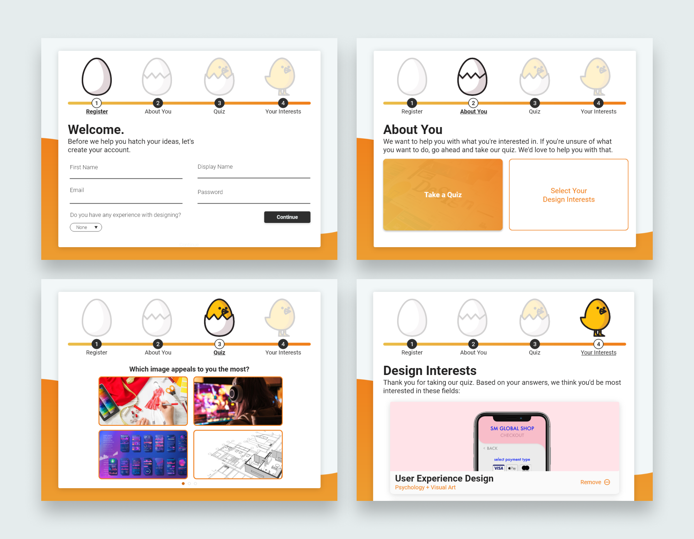
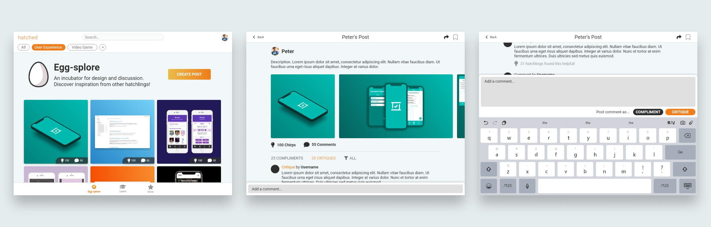
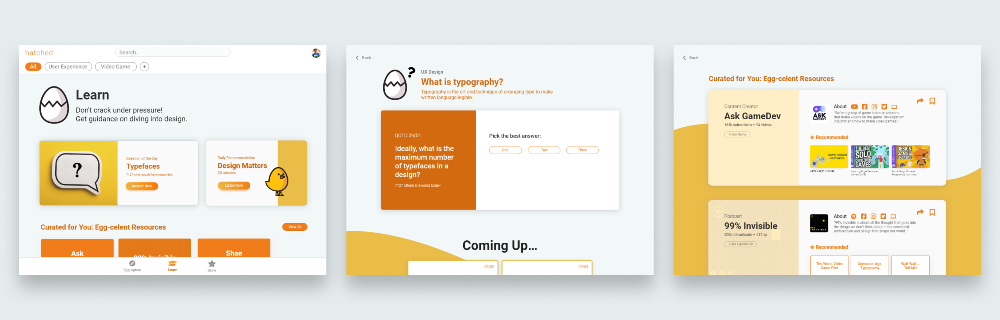
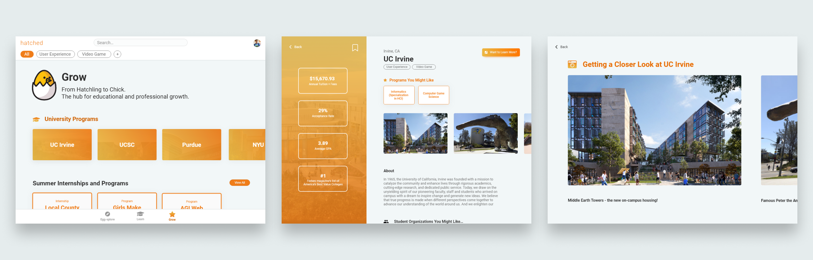

Interactive Prototype:
Open prototype in new window
The visual design of Hatched is egg-themed. The egg symbolizes that a user is new to design, and has the potential to hatch, explore, learn, and grow. In order to appeal to the high school audience, we took inspiration from popular social media apps so that our application’s interface felt familiar and intuitive to them. In addition, we used light-hearted, casual, and punny language to welcome the user to design.
Hatched begins with an onboarding process which includes a short quiz. By taking a quiz based on a user’s interests, we can find out what fields of design a user would be interested in learning about and guide them towards those industries.

Hatched consists of 3 main sections: Egg-splore, Learn, and Grow. Each section has content depending on a user’s design interests, such as User Experience Design or Video Game Design.
Egg-splore:
This section is dynamic and community-driven. Users are free to view other people’s designs, and post their own as well. Expanding upon the traditional commenting system, each post allows users to either comment or critique a post. This can spark insight on what is considered good or bad design.

Learn:
There is a “Question of the Day” to stimulate learning and encourage engagement. In addition, resources are provided for the user to learn more about design.

Grow:
Because Hatched is tailored towards highschoolers, we present educational and career opportunities that are most relevant to them. This includes university programs, internships, volunteering, and project opportunities. This allows a user to discover ways they can apply the skills that they’ve learned.
